Hydration of Alkynes to Aldehydes and Ketones
The elements of H2O can be added to the carbon-carbon triple bond of an alkyne by the same two reactions used for the hydration of alkenes, namely hydroboration-oxidation and acid-catalyzed hydration. Even though the reagents are similar, the products from hydration of alkenes and alkynes are quite different.
Hydroboration-Oxidation
Borane adds readily to an internal alkyn as illustrated by its reaction with 3-hexyne.
| 3 | 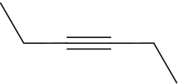 | + BH3 | THF ⟶ | 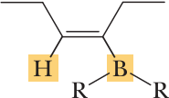 |
| 3-Hexyne | A trialkenylborane (R =cis-3-hexenyl group) |
Notice that the hydroboration of an internal alkyne stops after the addition of 1 mole of borane. The product is a trialkenylborane (the infix -enyl- shows the presence of a carbon-carbon double bond on the carbon bonded to boron). As with hydroboration of alkenes, hydroboration of alkynes is stereoselective; it involves syn addition of hydrogen and boron. Terminal alkynes also react regioselectively with borane to form trialkenyl-boranes. In practice, however, the reaction is diffi cult to stop at this stage because the alkenyl group reacts further with borane to undergo a second hydroboration.
| RC≡CH | BH3 ⟶ | 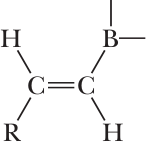 | BH3 ⟶ | 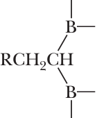 |
It is possible to prevent the second hydroboration step and, in effect, stop the reaction at the alkenylborane stage by using a sterically hindered disubstituted borane. One of the most widely used of these is di-sec-isoamyl borane, (sia)2BH, prepared by treating borane with two equivalents of 2-methyl-2-butene (amyl is an older common name for pentyl).
| 2 |  | + BH3 | ⟶ | 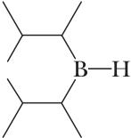 |
| 2-Methyl-2-butene | Di-sec-isoamylborane[(sia)2BH] |
Reaction of this sterically hindered dialkylborane with a terminal alkyne results in a single hydroboration and formation of an alkenylborane.
| 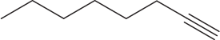 | + (sia)2BH | ⟶ | 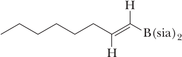 |
| 1-Octyne | An alkenylborane |
Just as with hydroboration of unsymmetrical alkenes, the addition of (sia)2BH to a carbon-carbon triple bond of a terminal alkene is regioselective; boron adds to the less substituted carbon. Treatment of an alkenylborane with hydrogen peroxide in aqueous sodium hydroxide gives a product that corresponds to hydration of an alkyne; that is, it corresponds to addition of H to one carbon of the triple bond and OH to the other as illustrated by the hydroboration-oxidation of 2-butyne.
| 1) BH3 ⟶ 2) H2O2, NaOH | 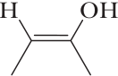 | ⥂ | 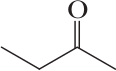 | Keq = 6.7 x 106 | |
| 1-Butyne | 2-Buten-2-ol (an enol) | 2-Butanone (a ketone) | (for keto-enol tautomerism) |
The initial product of hydroboration-oxidation of an alkyne is an enol, a compound containing a hydroxyl group bonded to a carbon of a carbon-carbon double bond. The name enol is derived from the fact that it is both an alkene (-en-) and an alcohol (-ol). To this point, hydroboration-oxidation of alkynes is identical to that of alkenes. Enols are in equilibrium with a constitutional isomer formed by migration of a hydrogen atom from oxygen to carbon and rearrangement of the carbon-carbon double bond to form a carbon-oxygen double bond. As can be seen from the value of Keq , 2-butanone (the keto form) is much more stable than its enol. Keto forms in general are more stable than enol forms because (1) a C=O π bond is generally stronger than a C=C π bond, whereas (2) C−H and O−H σ bonds generally have similar bond strengths. The keto and enol forms of 2-butanone are said to be tautomers. Tautomers are constitutional isomers that are in equilibrium with each other and differ only in the location of a hydrogen atom or other atom and a double bond relative to a heteroatom, most commonly O, N, and S. This type of isomerism is called tautomerism. Because the type of tautomerism we are dealing with in this section involves keto (from ketone) and enol forms, it is commonly called keto-enol tautomerism. We discuss keto-enol tautomerism in more detail istudying ketones. Hydroboration of a terminal alkyne using disiamylborane followed by oxidation in alkaline hydrogen peroxide also gives an enol that, in this case, is in equilibrium with the more stable aldehyde. Thus, hydroboration-oxidation of a terminal alkyne gives an aldehyde.
| 1) BH3 ⟶ 2) H2O2, NaOH | 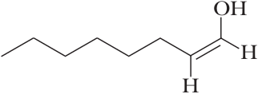 | ⥂ | 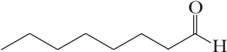 | |
| 1-Octyne | 1-Octen-1-ol (an enol) | Octanal |